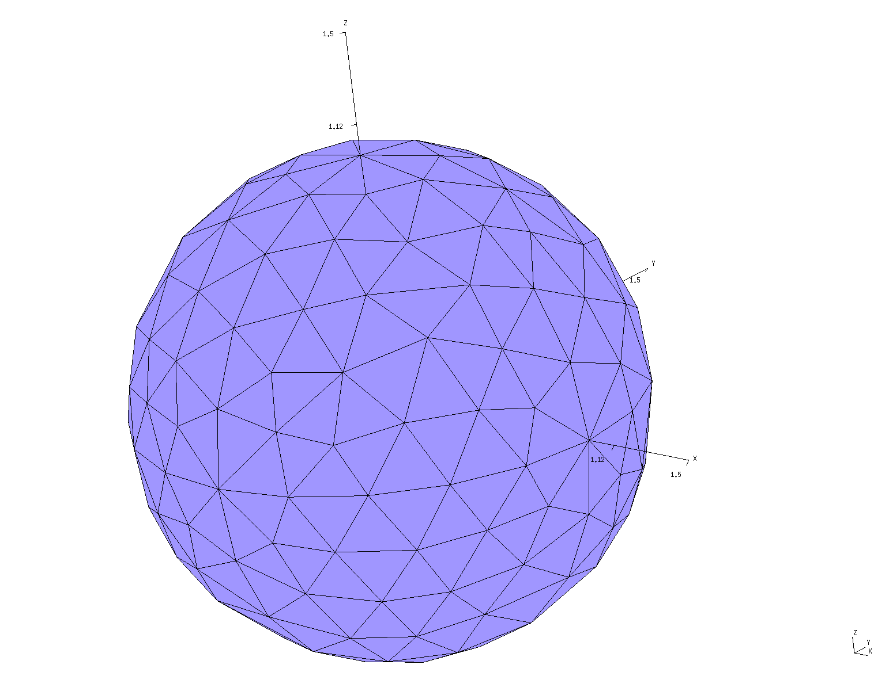
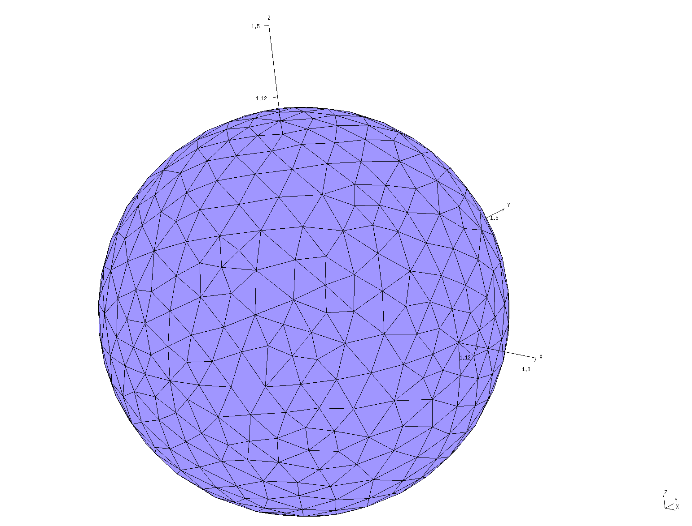
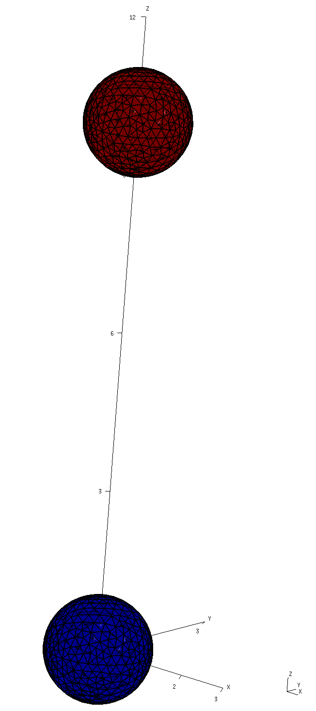
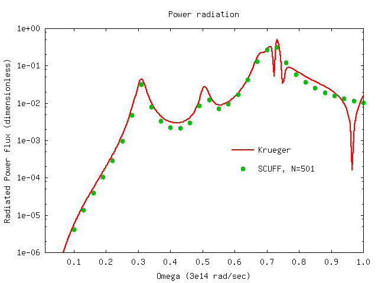
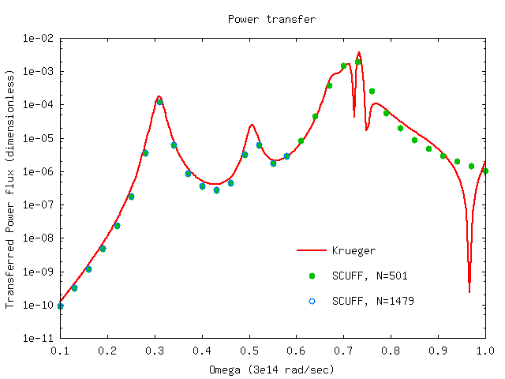
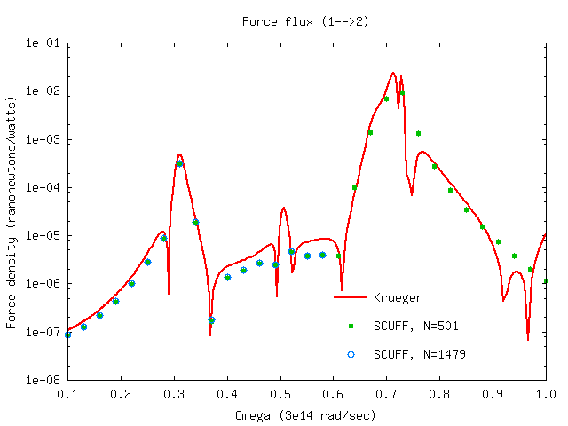
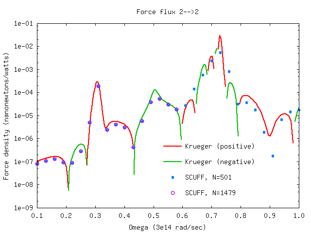

Thermal radiation, heat transfer, and non-equilibrium Casimir forces between silicon dioxide spheres
In this example, we use scuff-neq to compute (1) the power radiated by a single SiO2 sphere, and (2) the heat transfer and non-equilibrium Casimir force between two SiO2 spheres. We compare the results of scuff-neq to the predictions of the T-matrix formalism of Krueger et al.
The files for this example may be found in the
share/scuff-em/examples/SiO2Spheres subdirectory
of your scuff-em installation.
gmsh geometry file and surface mesh for a single sphere
The gmsh geometry file Sphere.geo
describes a sphere of radius 1 micron; it may
be meshed to generate coarse and fine surface meshes as follows:
% gmsh -2 -clscale 1 Sphere.geo
% RenameMesh Sphere.msh
% gmsh -2 -clscale 0.5 Sphere.geo
% RenameMesh Sphere.msh
(Here RenameMesh is a simple bash script
that uses scuff-analyze to count the number of interior
edges in a surface mesh and rename the mesh file accordingly.)
This produces the files Sphere_501.msh and Sphere_1479.msh,
which you can visualize by opening in gmsh::
% gmsh Sphere_501.msh

% gmsh Sphere_1479.msh

scuff-em geometry files
The scuff-em geometry file
SiO2Sphere_501.scuffgeo
describes a single SiO2 sphere.
The scuff-em geometry files
SiO2Spheres_501.scuffgeo
SiO2Spheres_1479.scuffgeo
each describe the same configuration: two SiO2 spheres
separated by a center--center distance of 10 microns.
You can visualize this configuration by typing e.g.
% scuff-analyze --geometry SiO2Spheres_1479.scuffgeo --WriteGMSHFiles
% gmsh SiO2Spheres_1479.pp

Spectral density of radiated power
As described in the scuff-neq documentation, scuff-neq computes temperature-independent quantities known as generalized fluxes, commonly denoted , which describe the ability of systems to exchange energy and momentum via radiation at specific frequencies The total power radiated by a finite-temperature object is obtained as an integral over angular frequencies in which the integrand involves a temperature-dependent Bose-Einstein factor and a temperature-independent dimensionless flux The distribution of labor in the scuff-em suite is that scuff-neq computes frequency-dependent generalized flux data and writes these in the form of data files, while a separate tool named [scuff-integrate][scuffIntegrate] post-processes the flux data to yield temperature-dependent heat-transfer rates, powers, and torques.
To use scuff-neq to calculate radiated-power flux at a given set of frequencies, we say simply
% scuff-neq --geometry SiO2Sphere_501.scuffgeo --OmegaFile MyOmegaFile
where MyOmegaFile is a list of
angular frequencies.
This produces the file
SiO2Sphere_501.SiFlux, which looks something
like this:
# scuff-neq run on superhr2 (07/11/15::00:31:36)
# data file columns:
# 1 transform tag
# 2 omega
# 3 (sourceObject,destObject)
# 4 PRad flux spectral density
DEFAULT 1.000000e-01 11 4.18911788e-06
DEFAULT 1.300000e-01 11 1.38869207e-05
DEFAULT 1.600000e-01 11 3.93335327e-05
DEFAULT 1.900000e-01 11 1.05263974e-04
As the file header says, the second column here
is the angular frequency
in units of rad/sec
and the fourth column is the dimensionless power
flux. (The first column lists the
geometrical transformation; since
we didn't specify the --transfile option to
scuff-neq, we have just a single geometric
configuration, labeled DEFAULT. The third
column identifies the source and destination objects;
since this geometry only has a single object,
the source and destination object are both
always object 1 and this column always reads
11.)
Here's a plot of the data:

In this plot, the solid line is the prediction of
the Krueger formalism, as computed
by a julia code called KruegerFormulas.jl.
The plot is produced by gnuplot using this script.
Spectral density of power transfer and non-equilibrium force
Here's a bash script that runs scuff-neq
for both the coarsely-meshed and finely-meshed two-sphere
geometry to compute the fluxes of power transfer
and nonequilibrium force between the spheres.
Running the script produces files SiO2Spheres_501.SIFlux
and SiO2Spheres_1479.SIFlux. Here are plots (produced
by the same gnuplot script referenced above)
of the heat-transfer flux from sphere 1 to sphere 2,
and the force fluxes from sphere 1 to sphere 2 and
from sphere 2 to sphere 2, compared to the Krueger
T-matrix results (again computed using the julia
code referenced above).


